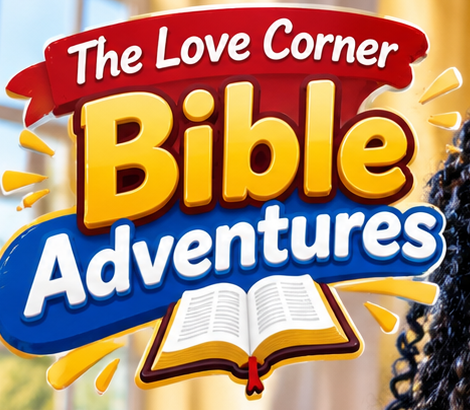
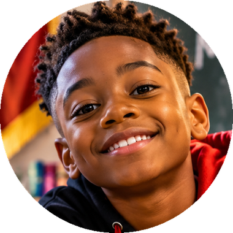

The Love Corner Kids Zone — the illustrated proposal, revised
Screen 3 of the 2026-11-13 previews is kept as drawn: same layout, same vibrant palette, the church's red, black, white and gold as the frame. What is new is the art: an illustration system of Black boys and girls, ages 6 to 10, drawn as inline SVG in the same dignity lineage as the games' art (a range of rich brown skin tones; afro, puffs, braids with beads, twists, locs, coils, a fresh fade; whole children in motion, never caricature), with friends of other backgrounds beside them. Teens get their own, more grown art. Revised 2026-11-13 to Darrell's whole-zone vision: the entire Kids Zone is the cartoon-rich experience, not one section. Two recurring guides (his approved reference, a girl and a boy) are on every screen: they introduce activities, explain games, celebrate rewards and walk the lessons. A Bible Adventure Theater, illustrated storybooks with read-along and comprehension, games and puzzles, adventure maps and badges, a Grown-ups section, a separate teen world, and everything Christ-centered with no magic or fantasy devices. The approved reference image is in hand and is used where it fits as is (the hero, Meet your guides, the Theater's key art). Every other appearance of the two guides is an interim cutout from that image, labeled INTERIM, or a labeled slot naming the render it waits for from the character artwork brief (52 images: poses, expressions and Bible scenes generated from the same reference). Nothing is drawn, generated or imitated to stand in for the two of them. Every number on these screens is named below as real or as an example. Scroll sideways for the nine screens; the legend under them says what each part reads and where each of the ten points lands.
Kids ZoneTHE LOVE CORNER
‹
1
Kids 6–10Teens 11–17

Your guides are ready. This week: Prove All Things.
Your adventure map · sign in and every lesson you finish lights a stop
2
9

Meet your guidesTwo friends who walk every story with you. INTERIM CUTOUT until girl-wave and boy-wave land.
3
This week's adventureLiving Lessons · read, listen, playStart ▶
RENDERgirl-reading-lanternthe girl on a rug, Bible on her lap, lantern beside her
10
Bible Adventure TheaterAnimated Bible stories · the church channel today, our own series nextOpen the Theater ▶
RENDERpair-theater-tilethe two on beanbags, lit by a screen
4
RENDERgirl-rememberingeyes closed, remembering
Memory versePsalm 23:1 · fill the words
RENDERboy-questionhand up, gold question mark
Bible triviaFrom the message
5
RENDERgirl-blockslifting the W block
Word builderSpell the Bible word
RENDERboy-magnifiermagnifying glass, curtain
Who am I?Guess the Bible hero
11
RENDERgirl-storybookholding up a storybook
StorybooksJonah · Noah · David · page by page
RENDERboy-reading-headphonesheadphones, finger on the line
Reading cornerRead to me · trace it · color it
6
My badges 0 of 6 · sign in to earn
First Step
Five Lessons
Quiz Star
Three in a Row
Little Reader
7
ASK ARI · your lesson helperStuck on a word? Ask me. I only talk about the lesson, and a grown-up can always see what we said.
Little Ones (3–6)Letters, numbers and first words from the Word · read aloud
8
ADVENTURE
THEATER
GAMES
BADGES
GROWN-UPS
Screen 1 · Kids home (the approved layout, revised to the whole-zone vision)
1The church's frame: seal, the Love Corner wordmark in red, a gold rule. Everything inside it is the Kids Zone's own world.
2The hero: the approved logo lockup and the two guides from the reference, as they are. When home-hero (the two on the sunrise path) lands, it takes this place. The lesson named is this week's REAL pick (Living Lessons, child band). The map bar is derived from the signed-in child's real rows; signed out it says so.
9Meet your guides: the two approved children, interim face cutouts until their waving cutouts land. Their names come from Darrell. Every striped gold slot on this screen names the render it waits for, from the artwork brief; no drawing stands in for the two of them.
10The Bible Adventure Theater door (Screen 7). Today it plays the church's own channel; episodes of the original series appear as they are published, never painted before.
11Storybooks (Screen 8) and the Reading corner: read-aloud, tracing and coloring, all of which exist today.
3This week's adventure opens the real lesson in-zone (Screen 3). The art is one of a small pool of adventure scenes, chosen by the lesson id, never per-lesson paintings.
4Memory verse and Bible trivia: the games that exist today, restyled. The verse reference is the real weekly pick; the words load from the hosted KJV.
5Word builder and Who am I? are new (Phase E). Each character is drawn once and reused.
6Badges are the six derived badges, as gold stickers; locked ones are grey. No scoreboard.
7Ari in child mode (the flag that exists and is unread today) and the Little Learners course for 3–6, kept and reachable.
8The kid dock: Adventure · Theater · Games · Badges · Grown-ups. Read-aloud lives inside every page as "Hear this".
Teens ZoneTHE LOVE CORNER
‹
1
Kids 6–10Teens 11–17
Real questions. Real answers.
This week's challenge: Prove All Things · 1 Thessalonians 5:21
Read at 11–1415–17
TEEN GUIDEStheir own approved reference, a girl and a boy of about fifteen, same style
2
3
This week's challengeProve All ThingsTest what you are told. Keep what is true. 10 min · quiz · talk it over with AriTake it on ▶
RENDERteen-summita teen planting a flag on a summit
Memory
Philippians 4:13Fill it in, then say it
Trivia
From the messageBishop Gwin's question
Word builder
Put it in orderThe verse, phrase by phrase
Who am I?
Three cluesName the person
4
Youth events from the office
Sun
Sunday Worship, 11:00 AMEvery week · no youth event is posted yet; when the office posts one, it shows here
Music & messages the church channel
▶
Worship and the WordOpens the church's own channel
Safe here: no profile, no chat, no scoreboard. Your door and reading level stay on this phone only.
5
CHALLENGE
GAMES
BADGES
EVENTS
READ
Screen 2 · Teens home (its own, more grown world)
1The teens' house is the church's house by night: black into deep red, gold on it, white words, the Fraunces display face. Same frame, no candy.
2Real ages, fixed: Teens reads at the youth band (11–14) by default and at teen (15–17) on a tap. Today the Teens door reads at teen only and the youth band is unused. The hero waits for the teen guides' own approved reference (not these two children, who are 9 and 10); the slot says so.
3The weekly challenge is the same real pick as the Kids door, read at the teen's band, with its real quiz and Ari.
4Events are the church record's announced events, future only, with the honest fallback that exists today; music is the church's channel.
Have you ever heard something, and everybody said it was true, but when you looked closer, nobody had really checked? The Bible says it is GOOD to check!
2"Prove all things; hold fast that which is good."1 Thessalonians 5:21 · KJV
3
RENDER · lesson scene poolThe two guides examining a scroll with a magnifying glass at a desk, a lamp and stacked books beside them (the step's scene, chosen by lesson id).
There were some people in a city called Berea. When Paul taught them, they did not just nod. They opened the Scriptures every day to see if what he said was so. And the Bible calls them "more noble" for checking!
4Read to meAsk AriColor it
girl-encourage
You read it! Now a quick check. The answer is in the verse you just heard.
5Quick check: what does the Bible say about testing what you are told?
ANever question what respected people say
BTest it, and keep what is really true
CBelieve whatever is said loudest
Next step ▶
ADVENTURE
THEATER
GAMES
BADGES
GROWN-UPS
Screen 3 · The adventure: the existing lesson, made a journey
1The lesson's own child-band opening, in a speech bubble. The words are the lesson's (ll28, child level, verbatim); nothing is rewritten.
2The anchor verse, red and gold (the Blood's color on the Word, DR-0099), fetched from the hosted KJV.
3The child band is cut into short steps by the age-paced plan that already exists (5-minute segments, a check after each). One scene per step from the adventure pool, matched to the lesson id. The step bar is the plan's real segment count.
4Read to me (the app's TTS), Ask Ari in child mode, Color it (the coloring page that already exists, DR-0866).
5The guide introduces the check, then the lesson's real quiz as big tappable answers with a speaker on each (the Little Learners read-aloud rule, extended to the Kids door). A pass writes the same learner record it writes in Learn, which is what lights a badge.
‹
Word builderGAMES · KIDS
1
Spell the Bible word
Tap the letters in order. Word 2 of 4 from this week's verse.
RENDERword-builder-headerthe girl placing a letter block on a tall stack
2The LORD is my S _ _ _ _ _ _ _; I shall not want.Psalm 23:1 · KJV
boy-explain
Tap the letters in order to spell the missing word. Stuck? Show a letter costs one star.
3
S
H
E
D
E
P
H
R
S
E
H
4Hear the verseShow a letter
RENDER · Psalm 23 sceneA shepherd boy leading three sheep up a green hill under a gold sun (a Scripture scene for the verse being spelled).
Teens play it differently: the verse arrives as shuffled phrases to drag into order, then a longer word to spell with no hints.
ADVENTURE
THEATER
GAMES
BADGES
GROWN-UPS
Screen 4 · Word builder (new, Phase E)
1The words come from this week's memory verse, loaded verbatim from the hosted KJV at play time: every word of four letters or more, in verse order. Nothing is typed into the game.
2The hint is the verse with that one word blanked (the same blanking the memory game already does).
3Letter tiles are the word's own letters, shuffled by the week's seed so the game is the same all week. Tap to fill a slot; a wrong letter shakes and returns.
4Hear the verse uses the app's read-aloud; Show a letter costs one star. Stars are this round's, shown once, never a record of anyone.
‹
Who am I?GAMES · KIDS
1
Guess the Bible hero
Three clues from the Word. Fewer clues, more stars.
RENDERwho-am-i-headerthe boy with the magnifying glass before the curtain
2CLUE 1Now the word of the LORD came unto the son of Amittai, saying, Arise, go to Nineveh, that great cityJonah 1:1-2 · KJV
CLUE 2Now the LORD had prepared a great fish to swallow up . And was in the belly of the fish three days and three nights.Jonah 1:17 · KJV
CLUE 3 · tap to reveal…
girl-point
Who is it? Guess early for three stars, or reveal clue 3 for one. No wrong answers here, only "not yet".
3
Noah
Jonah
Daniel
Moses
4
RENDER · jonah-3 reusedThe reveal shows the storybook's own scene for the person guessed.
Yes! Jonah. Read his story in the Scripture tab, or hear it read to you. Next hero ▶
ADVENTURE
THEATER
GAMES
BADGES
GROWN-UPS
Screen 5 · Who am I? (new, Phase E)
1A roster of Bible people, each with three clue REFERENCES (no clue text is typed in the app). The verses load verbatim from the hosted KJV; the person's name is blanked in the clue and shown whole after the guess.
2Clues reveal one at a time; the third is the easiest. Kids get people from the stories they meet first (Noah, Jonah, David, Ruth, Daniel, Esther, Moses, Peter…); teens get a wider roster.
3Four names to tap. A wrong tap says "not yet, try the next clue", never "wrong".
4The reveal names the person, shows the full verses, and opens the Scripture tab to the book. A test proves each clue verse really contains the name it blanks.
‹
My badgesKIDS ZONE
1
Look at you go!
2 badges earned. Kindness and showing up count as much as answers.
RENDERpair-celebrateboth guides jumping in gold confetti
2
First StepEarned
Little ReaderEarned
Five LessonsRead 5 lessons
Quiz StarPass a quiz
Three in a RowPass 3 quizzes
Showed Up3 days in a week
boy-cheer
Little Reader, earned! Two stops lit on your map. Read tomorrow and the third one lights.
3
Your adventure map
4Badges are yours alone. There is no scoreboard here: learning, kindness and showing up are the prize.
ADVENTURE
THEATER
GAMES
BADGES
GROWN-UPS
Screen 6 · Badges and the adventure map (derived, celebrated)
1The celebration scene and the sentence are chosen by how many badges the real rows earn (the encouragement copy that exists today).
2The six badges that exist, as gold stickers. Earned ones glow; locked ones say what earns them. (Example state shown: two earned.)
3The adventure map is the course's lessons as stops; a stop lights when the child's real record for that lesson exists. Signed out, no stop is lit and the card says why.
4The safety line stays, word for word.
‹
Adventure TheaterTHE LOVE CORNER BIBLE ADVENTURES
1
Now showing: the church channelNo episode of our own series is published yet. Worship and the Word from @TheLoveCorner play here today.
2
The Love Corner Bible Adventures our own series
Jonah and the Great FishJonah 1–3 · the guides go to Nineveh
IN PRODUCTION
Noah and the Door Yahweh ShutGenesis 6–9 · two by two
PLANNED
David and the Giant1 Samuel 17 · five smooth stones
PLANNED
The church channelLive worship and messages · youtube.com/@TheLoveCorner
WATCH
3girl-point
Every episode is a true story from the Word. Open the Storybook to read it first, then watch it with me!
4
After you watch earns a stop on your map
Read the story3 questions
Videos play inside the app from the church's own channel. No comments, no recommendations, no autoplay to anything we did not choose.
ADVENTURE
THEATER
GAMES
BADGES
GROWN-UPS
Screen 7 · Bible Adventure Theater (new)
1The approved reference is the series' key art and sits here as is. Now showing is honest: no episode of the original series exists yet, so the player plays the church's own channel (the record's media.youtube, which exists today) inside the app, the way Live Worship already embeds it. When nothing plays, pair-theater-wide takes this frame once it lands.
2The series shelf reads an episode registry (title, Scripture range, status, source). An episode shows as PLANNED or IN PRODUCTION until its video is published, then WATCH. Nothing is painted as available before it is.
3A guide's line is our authored voice; it never replaces or paraphrases the Word, and the no-magic content gate scans every line.
4After-you-watch opens the matching Storybook and three real quiz questions; a pass writes the same learner record Learn writes, which lights a map stop.
The kid dock becomes Adventure · Theater · Games · Badges · Grown-ups; Read lives inside every page as "Hear this".
‹
Jonah and the Great FishSTORYBOOK · KIDS
1
RENDER · jonah-3 · Jonah 1:17From the shore: the great fish the LORD prepared rises beside the ship, enormous, calm and strong, not a monster; Jonah already in the water; the two guides on the beach, the boy holding his lantern high, the girl pointing.
PAGE 3 OF 8READ-ALONG
"Now the LORD had prepared a great fish to swallow up Jonah. And Jonah was in the belly of the fish three days and three nights."
Jonah 1:17 · KJV · the Word, word for word
2boy-reading-point
Three days inside a fish! Yahweh had a plan for Jonah even there. Tap the words to hear them.
3Hear this pageColor this page
◀ BackNext page ▶
4
On the last page page 8 · comprehension
?Where did Yahweh tell Jonah to go?
ANineveh, that great city
BTarshish, by ship
ADVENTURE
THEATER
GAMES
BADGES
GROWN-UPS
Screen 8 · Interactive storybook with read-along (new)
1A storybook is a list of REFERENCES (Jonah 1:1-3, 1:4, 1:17, 2:1, 2:10, 3:1-3, 3:5, 3:10) with one scene each. The page text is the KJV verse loaded at read time, word for word, never retold. Read-along highlights the phrase being read by the app's own voice. Each page's scene is a render from the artwork brief (jonah-1 to jonah-8) with the two guides as witnesses; the slot names the render until it lands.
2The guide's caption is our authored voice, written beside the verse and never inside it. A content gate scans every caption: no magic, spells, wizards, fairies, potions, wishes or fantasy devices; miracles stay the acts of Yahweh the text says they are.
3Hear this page is the app's read-aloud; Color this page is the existing coloring page over the same verse. Reading challenges per band: Kids read three pages aloud with the voice; Teens read the chapter in the Scripture tab and answer five.
4The last page asks three questions whose answers are in the verses just read (a test proves each answer's words appear in the storybook's own verses). A pass writes the learner record that lights the map stop and earns the badge.
‹
Grown-upsKIDS ZONE · FOR PARENTS AND TEACHERS
1
This week with your child: Prove All Things
1 Thessalonians 5:21 · Proverbs 25:2 · Acts 17:11. How to lead it, from the lesson's own notes:
Open in prayer and read 1 Thessalonians 5:21 and Acts 17:11: proving is commended, not rebuked.
Ask: what is one thing you believe mostly because "everyone says so"? Have you ever checked it?
The Bereans were called noble for checking even Paul. Where has "questioning is disrespectful" kept you from testing?
2
What they did
Sign in and this shows the lessons read, quizzes passed and badges earned on this account, from the same records Learn keeps. Nothing is counted until you do.
3
Settings on this device
DoorKids 6–10
Reading levelChild band
Text sizeA+
Reading voiceThe app's voice
4
Ari, the lesson helper
Ari answers only about the lesson and its verses, in child mode: short sentences, no links, no personal questions, and "ask a grown-up" for anything else. The chat is on the lesson screen where you can read it.
5Print the coloring bookFull lesson in Learn
Safe here: no profile, no chat with anyone, no scoreboard. Your child's door and level stay on this device only.
ADVENTURE
THEATER
GAMES
BADGES
GROWN-UPS
Screen 9 · Grown-ups (new)
1The week's lesson with its REAL facilitator notes (every Living Lesson carries howToRun, talkingPoints and discussionPrompts today); the three lines shown are ll28's own, shortened for the still.
2Progress is the signed-in account's real learner records; signed out, an honest sentence and no number.
3Settings that exist today: the door, the reading band, text size (the app's steps) and the reading voice; all device-local.
4Ari in child mode, stated plainly for the parent, matching the rules the prompt now carries.
5The coloring book (exists, DR-0866) and the full lesson in Learn.
What is real on every screen (the reality trace)
Part
Reads
Where it lives today
Change
Doors Kids 6–10 / Teens 11–17
device preference (no child record)
lib/youth-zone.js YOUTH_DOORS
Kids reads Living Lessons at the child band (every lesson has one, screened); Teens reads youth (11–14) by default and teen on a tap. Little Learners (3–6) stays as the Little Ones door.
This week's adventure / challenge
a real module, by ISO week
weeklyLesson()
opened in-zone through the existing age-paced plan, quiz and tutor; the record it writes is the one Learn writes
Memory verse
reference list; words from the hosted KJV
MemoryVerseGame
restyled only
Bible trivia
Bishop Gwin's live trivia_questions row, else the anchor set
Engagement.jsx TriviaCard
kid-styled wrapper; the free-text anchor gains a verse-grounded kids set (each question carries its reference; a test proves the KJV verse holds the answer)
Word builder
the weekly verse's own words (KJV, verbatim)
new lib/kids/word-builder.js
Phase E
Who am I?
references only; verses from the KJV at play time
new lib/kids/who-am-i.js
Phase E
Badges + adventure map
learner_lesson_records, derived
badgesFor(), BadgeShelf
sticker art; the map lights stops from the same rows
Ari
/llm/chat, the existing tutor seam
class-tutor.js
childMode is read for real: short sentences, the lesson only, always "ask a grown-up"
Youth events, music
church record, future only; the church channel
upcomingAnnounced()
unchanged
Bible Adventure Theater
an episode registry (title, Scripture range, status, source url); the church channel from the record
new lib/kids/theater.js; player via the Live Worship embed
Phase D2; episodes appear only when published
Storybooks + read-along
reference lists; verses from the KJV at read time; captions in our voice; the app's TTS with phrase highlight
new lib/kids/storybooks.js, components/kids/Storybook.jsx
Phase D2; the content gate scans every caption
Grown-ups
the lesson's facilitator notes; learner records; device settings
new components/kids/GrownUps.jsx over existing data
Phase D1
Puzzles
the verse's own phrases (the teens' Word Builder form) as a picture-strip puzzle for kids
app/public/lovecorner/kids/guide-a.png, guide-b.png (slots); KidsArt.jsx stand-ins until then
Phase D1 with the art; the slot never shows a generated face
Illustrations
inline SVG components, no network, no generated images
new components/kids/KidsArt.jsx, the GameArt.jsx lineage
Phase D
Darrell's ten points, and where each lands
#
The point
Where it is on these screens
1
Realistic 3D cartoon children, predominantly Black, diverse; the two reference characters as guides everywhere
The guides on Screens 1, 3, 4, 5, 6, 7, 8 (stand-ins marked). The realistic 3D look is the reference artwork's: it is placed as an asset, never hand-coded or generated here. The supporting cast (tiles, scenes) is the drawn system; it can be re-rendered in the reference's style once that style exists as assets.
2
A vibrant, playful, animated homepage
Screen 1: the hero, the guides, the bobbing characters and twinkling stars (off under reduced motion), eight doors that each open a real thing.
The reality trace above names what every tile reads and opens. The one honest "not yet" is the original series, shown as in production, which is the truth.
Christian values, as a gate. Every line of our authored voice in the Kids Zone (guide captions, episode blurbs, game copy) passes a machine check: Christ-centered, true to the text, and free of magic, spells, wizards, witches, fairies, potions, wishes, genies, superpowers, the occult or any fantasy device; miracles are told as the acts of Yahweh the text says they are. Scripture itself is never scanned or altered (DR-0076). The gate is proven to catch with a deliberately bad caption, and it fails the build.
The palette, resolved
Darrell, 2026-11-13: keep Screen 3's layout and vibrant colors; the church is red, black, white and gold. Both hold: the Kids Zone wears its own bright world inside the church's frame (header, seal, gold rule, the red Start, the gold badges, the Bible's red cover with its gold cross). The Teens Zone wears the house by night (black into deep red, gold) with one cool accent. True red on the Word stays the Blood's color (DR-0099) and marks nothing else.
church redchurch blackwhitechurch goldpurplebluetealcoralpinkorangevioletgreensuncream
The artwork collection, not a drawn cast
Darrell, 2026-11-13: the approved children appear in different poses, expressions and activities, generated from the same reference; repeated cutouts are never the final artwork. So the drawn cast of earlier versions is retired for characters. What the screens show now: the reference used as is where it fits; interim cutouts labeled INTERIM; and striped gold slots that each name the render they wait for. The full list, 52 images with prompt-ready descriptions, file names and sizes, is docs/design/love-corner-kids/2026-11-13-character-artwork-brief.md, mirrored by app/src/lib/kids/guides.js (SHOT_LIST), whose test proves every id is described and every landed file is on disk. Props, icons, badges and the treasure map stay drawn: they are not characters.
Phases (each its own PR, held until approved)
Phase
Builds
Proof
D1
KidsArt.jsx (the cast, scenes, badges, icons) + the Kids Zone shell over YouthZone's doors; kids-zone.css as its own file (no edit to index.css, which Phase C holds); true ages; Teens at youth/teen; the adventure reader (age-paced plan + quiz + read-aloud + coloring); Ari childMode read for real; trivia, memory verse and badges restyled
existing youth-zone tests green; new render tests (doors, derived badges, no profile/chat/scoreboard strings); childMode proven in the prompt; 390 px measured, no overflow
E1
Word builder (kids: letters; teens: phrase order) over the weekly verse
pure tests: every word from the loaded text; the seed shuffles the same all week; a verse that does not load says so
E2
Who am I? (kids roster, teens roster) over clue references
a test loads every clue verse from the in-repo KJV and proves the blanked name is in it
D2
The Bible Adventure Theater (episode registry + in-app player over the church channel), the first storybooks (Jonah, Noah, David) with read-along, the guides' captions, the Grown-ups screen and the content gate
no episode shows as published without a real source; every storybook page is a KJV verse; every caption passes the gate; the gate trips on a bad caption; the Grown-ups screen shows no number signed out
F
Comfort pass at 360/390/768/1440 and three text sizes